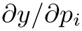
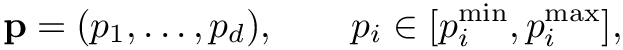
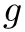
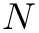
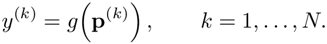
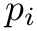
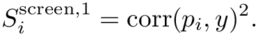
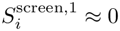
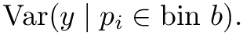
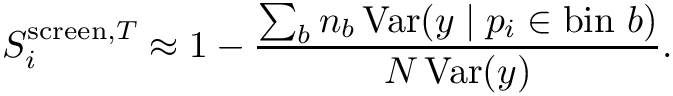

svZeroDTuner Concepts
Table of Contents
What Is Being Tuned
svZeroDTuner adjusts model parameters identified by name using the format Block.Parameter, for example:
- LV.Emax
- AR_SYS.C
- RPA.R_poiseuille
Names are resolved against svZeroD model JSON structures (chambers, vessels, valves, boundary conditions, and selected global sections).
Targets and Metrics
Targets are defined in the YAML targets section and are computed from simulation outputs using expressions.
Two target types are supported:
- scalar: one value per target (for example np.max(pressure:AV:AR_SYS))
- time_series: waveform target from a CSV file (time, value)
Expressions can combine outputs with numpy operations, and output names must match available solver output labels.
Loss / Objective
The objective is built from weighted relative errors across all targets.
- L1: sum of absolute relative errors
- L2: Euclidean norm of the relative-error vector
Targets are internally treated as allowed ranges [lo, hi]:
- Point target: target_value implies lo = hi = value
- Relative range: relative_bounds expands around target value
- Explicit range: target_range provides [min, max]
Penalty is zero when simulated values are within range, and positive only when values are outside bounds.
Constraints / Bounds / Scaling
Each parameter requires bounds: [min, max] and may define scaling:
- identity: no transform
- log: optimizer runs in log-space (bounds must be positive)
- max: scale by max bound magnitude
Bounds act as hard optimizer constraints and are also checked against initial parameter values.
Sensitivity Analysis
svZeroDTuner sensitivity analysis is a global screening method. It is intended to rank which parameters matter most for selected quantities of interest (QoIs) before optimization.
It is not computing local derivatives such as 
Sampling and Quantities of Interest
Suppose the tunable parameter vector is

and a scalar quantity of interest is
![\[y = g(\mathbf{p}),
\]](form_203_dark.png)
where 
svZeroDTuner generates 

This produces one cloud of sampled parameter values and one sampled QoI value for each simulation.
What Is Being Computed
For each parameter 
First-order screening score
The first-order score is the squared Pearson correlation between

Interpretation:



Because the score is squared, it measures strength but not direction:
- a large positive correlation and a large negative correlation both give a large score;
- use the scatter plots or raw outputs if you need to know whether increasing a parameter raises or lowers the QoI.
Total-order screening score
The total-order score is a heuristic based on conditional variance reduction. The sampled values of

The code then forms the weighted average within-bin variance and normalizes by the total variance:

Interpretation:
- values near 0 mean that fixing or stratifying that parameter does not reduce QoI variability much;
- values near 1 mean that much of the QoI variability is associated with that parameter, including possible nonlinear effects and interactions.
This total-order value should be interpreted as a ranking heuristic, not as a formal Sobol total-effect index.
What the Sensitivity Values Mean in Practice
Use the scores to prioritize parameters:
- high first-order, high total-order: strong direct driver of the QoI; usually a good tuning candidate;
- low first-order, high total-order: weak simple trend but potentially important nonlinear or interaction effects;
- low first-order, low total-order: low-impact parameter for that QoI over the chosen bounds.
Important limitations:
- Results depend on the parameter bounds. A parameter can appear insensitive simply because its tested range is narrow.
- Squared correlation can miss non-monotone relationships.
- The total-order score is approximate because it is based on binning rather than a dedicated variance-based estimator.
- Failed simulations are excluded from the score calculation, so large failure regions can bias the ranking.
For these reasons, sensitivity analysis in svZeroDTuner should be used to screen and rank parameters, then followed by optimization and model validation.
Literature Context
The implementation is most closely related to the general literature on global and variance-based sensitivity analysis, but it uses lighter-weight screening metrics rather than exact Sobol index estimators.
Useful references:
- I. M. Sobol, Global sensitivity indices for nonlinear mathematical models and their Monte Carlo estimates, Mathematics and Computers in Simulation, 55(1-3), 271-280, 2001.
- A. Saltelli, M. Ratto, T. Andres, et al., Global Sensitivity Analysis: The Primer, Wiley, 2008.
Those references describe the formal first-order and total-order variance decompositions that motivate this kind of analysis. In contrast, svZeroDTuner currently provides a computationally cheaper screening approximation suitable for model calibration workflow decisions.
Convergence and Termination
svZeroDTuner currently supports:
Optimization options are passed through to SciPy using native option names.
Practical guidance:
- differential_evolution
- Pros: global, derivative-free search; less sensitive to poor initial guesses; handles multimodal objectives better.
- Cons: usually requires many model evaluations; can be slow for expensive closed-loop simulations or large parameter sets.
- Use cases: good default when parameter uncertainty is large, when the starting guess is unreliable, or when you suspect multiple local minima.
- Nelder-Mead
- Pros: simple derivative-free local search; often cheaper than global search when starting near a good solution; easy to use for small tuning problems.
- Cons: local optimizer, so it can converge to suboptimal minima; sensitive to initial guess and parameter scaling; typically degrades as dimension grows.
- Use cases: good for small problems with a reasonable initial parameter set, or for local refinement after a broader search.
By default, optimization can terminate early when objective reaches zero-range penalty (terminate_at_zero: true).
Failure Modes
Common failure patterns:
- Simulation failure for trial parameters (objective penalized with a large fallback value)
- Multiple parameter sets producing similar outputs (non-identifiability)
- Persistent convergence at parameter bounds (model or bounds may be restrictive)
- Conflicting targets that cannot be satisfied simultaneously
See Troubleshooting for mitigation strategies.
Generated by